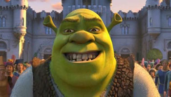

Shrek Is the best movie series of all time.
Shrek

who is shrek?
Shrek is the protagonist and hero in the film Shrek. In the beginning of this film, Shrek struggles with accepting himself as an ogre. He is essentially shunned by society, and this causes him to really re-evaluate all of the characteristics he once prided himself on. Visually speaking, by looking at images of Shrek, it is difficult to imagine him as the hero of any story. He is not your average hero or prince for that matter. He is instead, green, unattractive, out of shape (obese), dirty, ungroomed, standoffish, and unwealthy. All of these characteristics are made quite clear throughout the movie. In other fairy tales, there is no mention of the hero ever being anything but handsome, human, in shape, royal (or in some way privileged), and clean. Shrek defies these representations, and is able to actually get the girl in the end. Because the story is set up in this way, it redefines characteristics of a normative hero. This film also, "as with any children’s text, [possesses] the didactic implications of film that worry adults. We are all familiar with the phrases, 'this is a bad message for children', 'this is not appropriate for children', and above all: 'this is not good for children'"